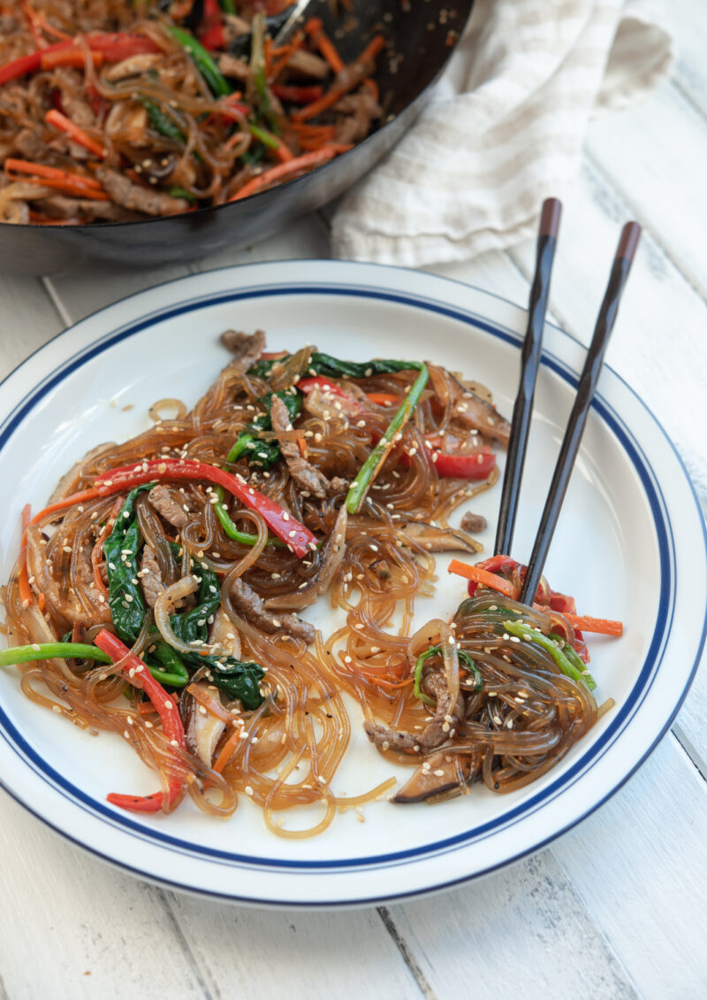

Japchae Recipe

Description
Japchae is a signature Korean noodle dish. It is made with Korean glass
noodles called dangmyeon. The noodles are stir-fried with various
vegetables as well as beef or pork.
Japchae is a dish that you can find on any Korean feast table, ranging
from birthdays to weddings to holidays.
Ingredients
For the noodles
- Dangmyeon (Korean glass noodle)
- Onions
- Carrots
- Bell peppers
- Spinach
- Shiitake mushrooms
- Beef or pork
For the sauce
- Soy sauce
- Garlic
- Sugar
- Sweet rice wine
- Oil
- Sesame oil
- Black pepper
- Toasted sesame seeds
Steps
- Soak the dangmyeon
- Season meat and prepare japchae sauce
- Stir-fry vegetables
- Cook meat
- Cook noodles with the sauce
- Add vegetables and meat with noodles